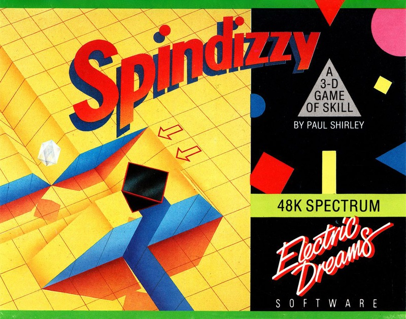
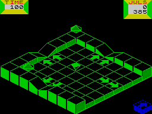

Spindizzy


{kind=link}

| Publisher: | Electric Dreams |
| Price: | £9.99 |
| Year: | 1986 |
| Source: | CRASH, Issue 29 |

Hanging in nether space, a region only recently discovered by the dimension dabblers, is Hangworld, a place of incredible wonders just waiting to be explored. And yes YOU have been chosen from a list of millions to be the lucky soul who gets the chance to take part in a journey of adventure and excitement charting out a brave new world. Not fooled? Okay, you’d better have it short and sharp then: Your government wishes to inform you that you have been conscripted to serve in the military Cartographers Corps. Make your way immediately to the local Cartography Office where you will receive further information. Failure to conscript will result in dissolution. You have been warned.
So, you pack up your belongings and prepare for a stint in nether space under the watchful eyes of the army. Nether space is the place where boys become men and men become dead. A rather hefty chunk of space is designated for your exploration — no less than 385 sections — but only a ridiculously small amount of energy is allocated to your exploration craft. Nervously sitting within GERALD, your craft’s familiar name, the transducers hum and reality flickers out of view only to be replaced with Hangworld, a place of major danger, just waiting to destroy those who venture there.

snapped by ace lensperson Cameron Pound
just as he takes a tumble into the middle
of nowhere
As Cartographer Private, your Cartographer’s Handbook explains, you have been allocated an area of Hangworld and must explore as much of it as you can. Such exploration is rather expensive, owing to the large amount of energy used by the reconnaissance craft in your command. Consequently, recruits are encouraged to find and collect energy crystals that are to be found around Hangworld. As the reconcraft comes into the immediate vicinity of a power jewel, its plasmagrabs are automatically activated and the crystal is collected and converted into pure energy.
Sitting within your craft, the view of the outside world comes via a computer monitor — an image showing the surrounding section from above with GERALD displayed on screen. Obviously, the image presented to you is computer interpreted, and as such is a bit lacking in detail, though there’s enough visual information for you to negotiate the obstacles that encumber progress. The scanner is quite a versatile bit of equipment and its viewpoint can be rotated through four different vantage points. This is a handy feature if the craft is out of view behind some Hangworld scenery. If GERALD is guided off-view, then the scanner automatically flips to another section.
Controlling GERALD shouldn’t present too many problems, even for a rookie cartographer. Four directional controls are supplied to propel GERALD along the ground. While GERALD is really designed for terra firma, it’s possible to take to the air, though gravity quickly returns you to land. The fire button activates GERALD’S turbo unit which greatly increases your maximum speed. With a little practice, you can use the many inclines and ramps in Hangworld as jump off points for acrobatic feats — such manoeuvres are important if you are to map out the entire sector that has been allocated to you and GERALD.
GERALD has polymorph capabilities. At a mere keypress the person in the driving seat can change GERALD’S form into a ball, tetrahedron or gyroscope. Each incarnation has its own particular quirks when it comes to response to the controls, and though no one form has any strong advantage over the others, personal choice usually soon decides on one of the three you’ll stick with.
Another aid to exploration is the lift system to be found around Hangworld. Left by an ancient civilisation long since departed, the system comprises a number of lift activator pads each bearing an insignia. Wander over one of these and all the lifts bearing that insignia are activated. Only two different types of lifts can be activated at once, and a scanner at the bottom left hand side of the view-screen shows which lifts are operative.
Another handy on-screen window reveals how many sections remain unmapped. Pressing the map key draws up a screen which details the sections of Hangworld which have already been mapped out.
While Hangworld is under exploration, a time indicator shows how much time remains before GERALD’s energy supply runs out. Extra time can be won by collecting power jewels, but a large chunk of exploring time is lost if GERALD is guided off the edge of a section into the oblivion in which Hangworld is suspended, as an enormous amount of energy is needed to transport you and GERALD back to safety. Falling off ledges or leaping ramps over-enthusiastically also results in energy losses.
Should time run out, you are regenerated on Earth only to be sent back to Hangworld once more to restart the mission. If, however, you return with your allocated section completely surveyed the Government allows you to resume the life of Private Citizen rather than Private Cartographer, and an Honourable Discharge from the Cartography Corps is your reward.
CRITICISM
“Spindizzy is one of the most addictive games I’ve ever played on the Spectrum. The game rates high on originality owing to some very nice features, such as changing shapes, speed control and very fast changes in viewing angle — of course all these meant that the sound had to suffer, but the writers still managed to get in some good effects whenever possible. I loved trundling around the area and just seeing what all the places in this strange world looked like. All the other little features are very well animated — the lifts are especially good. Spindizzy is one of the fastest maze games I’ve played, and flicking between the screens is very smooth. Electric Dreams’ latest release will keep all sorts of people attached to it for ages. Buy it, and see if you’re one of them.”
“Well thank heavens for that! Electric Dreams have finally put out a good Spectrum product. Spindizzy almost makes up for the crime of releasing Winter Sports (nearly but not quite). Spindizzy really is very good indeed and is even original to some extent, though it does look like it was ultimately inspired by Marble Madness. The control, animation and graphics are all top hole, especially the 3D effect that adds a new slant on the Alien 8 style of game. While it’s immediately great fun to play, there’s a lot in Spindizzy to keep any Spectrum gamester glued to the screen. Overall a game that is not worth missing.”
“Brilliant! Spindizzy is by far the best maze game I’ve played on my Spectrum. The graphics are superb, and the over-responsiveness of the controls really adds to the game. It represents a really big challenge, and plays very well indeed. I don’t think I can criticise it much, apart from the fact that it would have been even better if the character set had been altered. Beginner’s levels, playability, addictiveness, good packaging: Spindizzy is a really nice game. Buy it: I think it represents State of the Art on the Spectrum today.”
COMMENTS
| Control keys: | Redefinable |
| Joystick: | Kempston |
| Keyboard play: | Responsive, but tricky! |
| Use of colour: | Neat |
| Graphics: | Stunning |
| Sound: | Erm... pardon |
| Skill levels: | One |
| Screens: | 385 |
| General rating: | A very neat game — a very neat variant on the maze/mapping theme, brilliantly done |
| Use of computer: | 92% |
| Graphics: | 94% |
| Playability: | 94% |
| Getting started: | 91% |
| Addictive qualities: | 94% |
| Value for money: | 91% |
| Overall: | 93% |